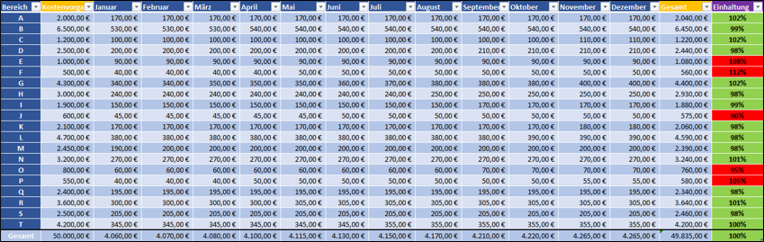
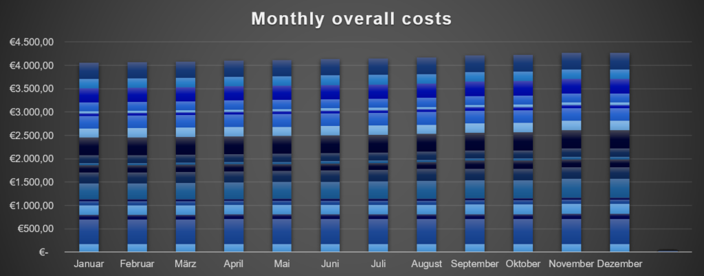

cost statistics
Cette page n’est pas encore disponible dans cette langue.
The cost statistics show whether the planned expenditure or budget was adhered to. We can use it to discover in which areas the planned budget was adhered to, exceeded or undercut. For a detailed evaluation of the collected data, we set guidelines that must be adhered to. This also includes taking into account possible deviations or determining how high these may be.
We work with a traffic light system in order to be able to present the evaluation to our customers in a clear manner.
Specification: Was the planned budget adhered to with a margin of +/- 2% deviation?
We document all cleaning costs each month and use the traffic light system combined with the specification to show in which working areas the costs were adhered to or not. If they exceed or undercut the specification too much and are no longer withing the deviation, they are highlighted in red.

The collected data is recorded in statistics and then evaluated.

In order to avoid errors in the evaluation, unscheduled deviations or changes are documented every month. In this way we can rule out that there is an error in the cleaning plan. In conjunction with our other parts and our public documentation, we can locate the source of the problem and work out a solution for you.